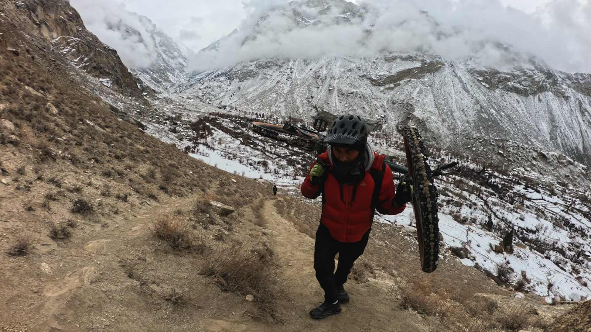
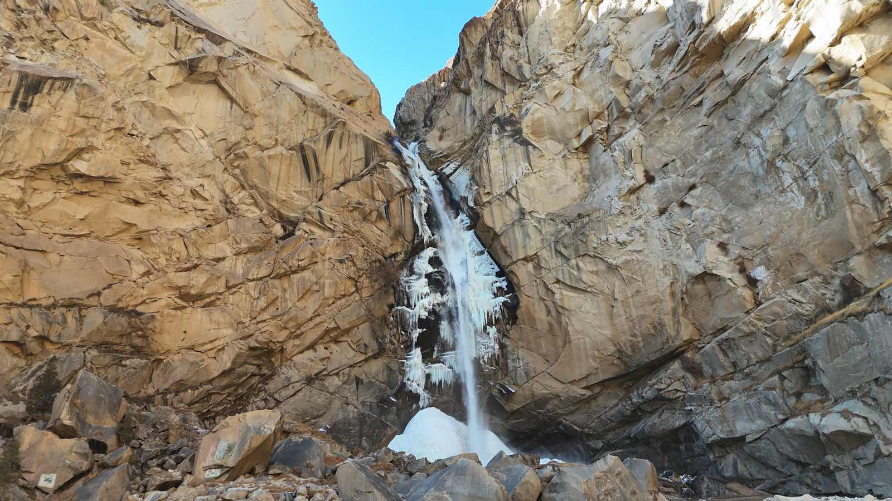
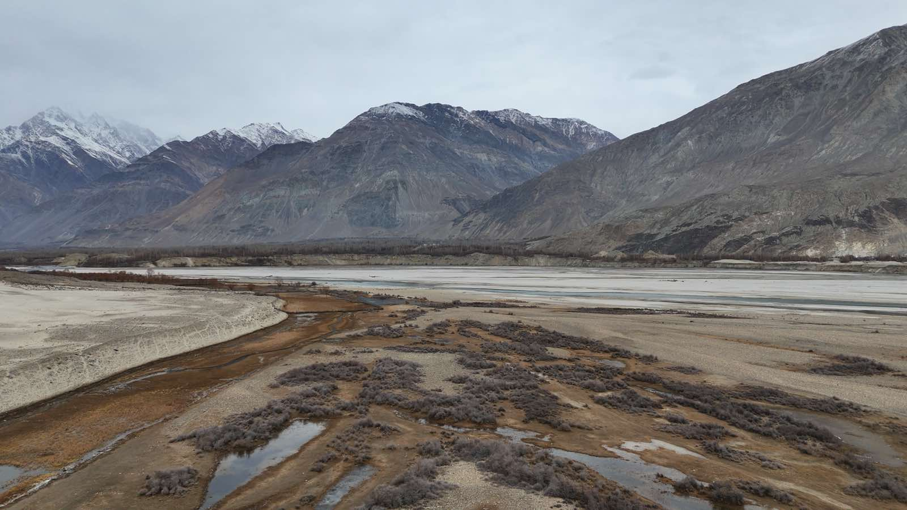
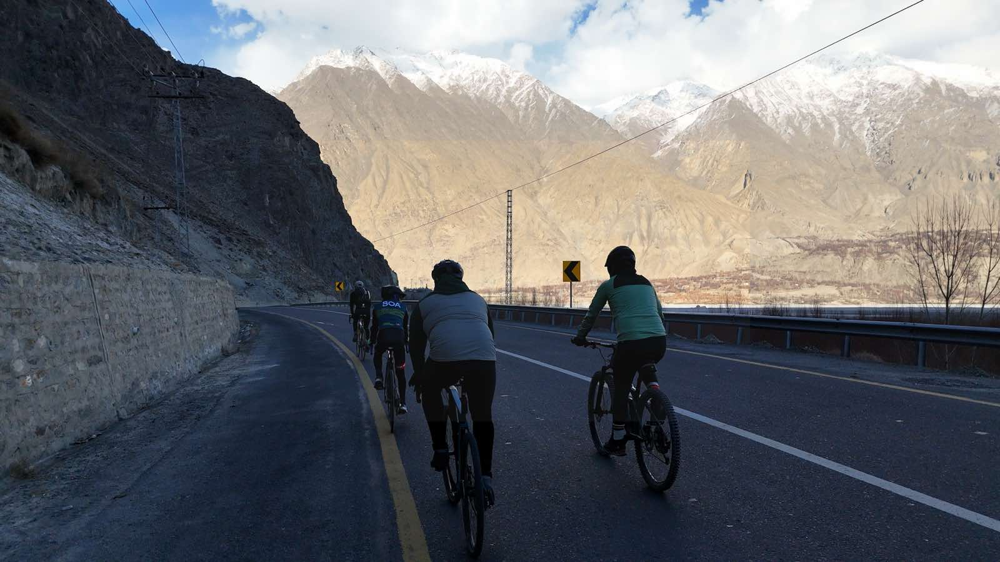
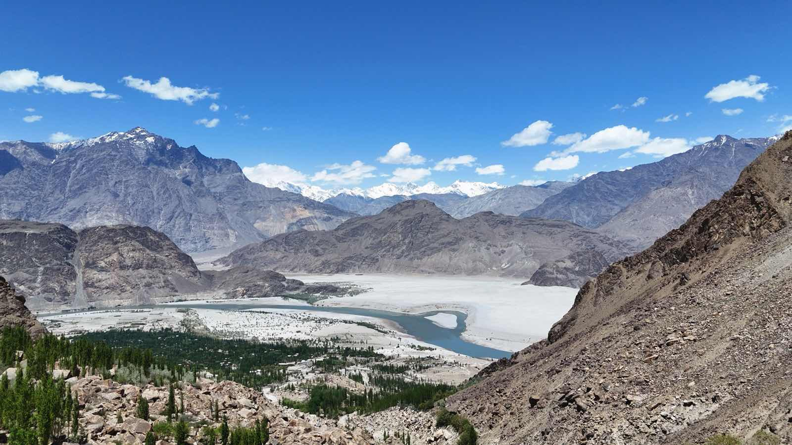

Skardu is the start line, not the whole story. Five valleys, five moods — pick one and we'll sort the bike, the route, and the company.

Hassnain's home valley. Hidden Baltistan: some of it behind a permit, all of it worth it.

Orchards, forts, a cold desert, and a lake that holds the mountains upside down.

Stairs, jetties and a lake that swallows the afternoon.

Quiet roads, a prayer-still pond, villages that wave.

Our high pasture: stone stairs, night skies, and Masrur Rock at the top.